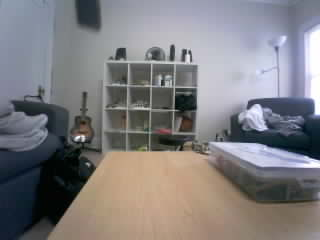
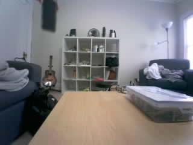
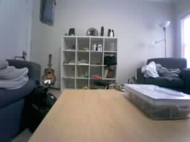
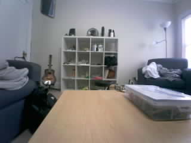

Frame 40: SMALL_CHANGE | 0.979% changed area
Original JPEG · MeasurementsOriginal photos are unchanged. Boxes show the largest changed region against the learned empty scene. Area cutoff is recorded with each photo; confirmation: 3 frames. This is not deer recognition.

Frame 40: SMALL_CHANGE | 0.979% changed area
Original JPEG · Measurements
Frame 41: SMALL_CHANGE | 2.812% changed area
Original JPEG · Measurements
Frame 42: SMALL_CHANGE | 2.167% changed area
Original JPEG · Measurements
Frame 43: SMALL_CHANGE | 1.771% changed area
Original JPEG · Measurements